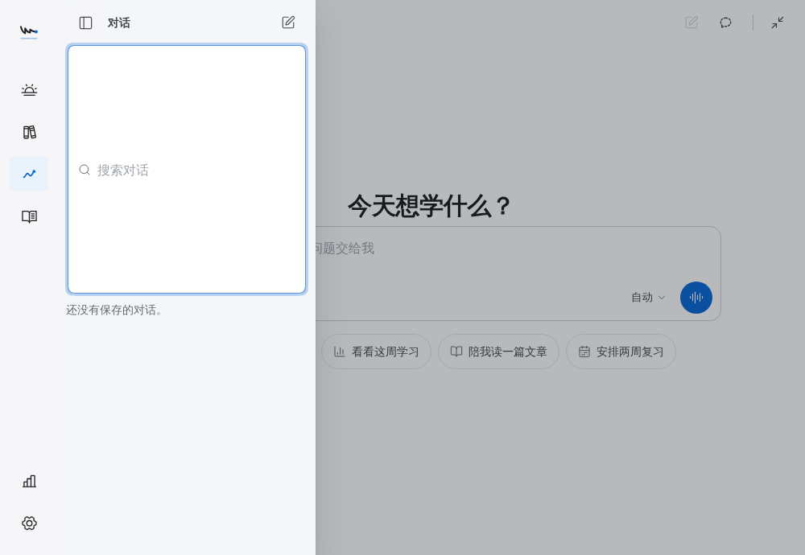
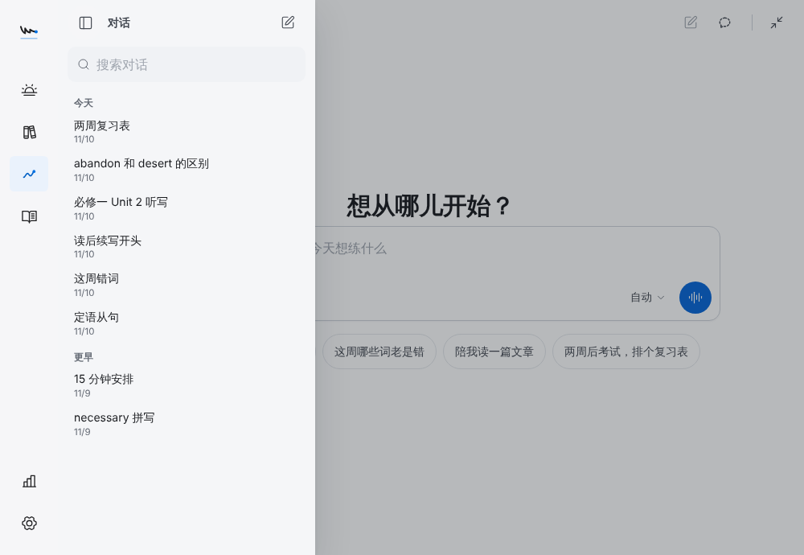

2026-11-10 · 分支 claude/great-dirac-prol0i · 未发版，应用版本仍为 2.19.0
参考 Codex CLI（沙箱与审批分离、前缀缓存顺序）、Claude Code / Agent SDK（模型→工具→回传循环、轮次与预算上限、被拒调用作为结果回传）、DeepSeek Harness（工具 schema 与宿主字段分离、只追加会话日志）。
| 问题 | 原因 | 修复 |
|---|---|---|
| 对话列表搜索框高 309–414 px | 全局 .search-field{flex:1} 在纵向面板里撑满高度 | 面板内重置，38 px（触屏 44 px）；少于 6 段对话时不显示；触屏打开不弹键盘 |
| 全局样式泄漏 | 全局 input/textarea/button/h1/.switch/.small 规则作用于对话区 | 在对话样式表内统一复位 |
| 文案与回答的 AI 腔 | 泛化开场白、装饰图标、模型名突出、Markdown 符号 | 开场白用学习记录事实；学习者口吻的起步建议；回答上方显示“查了词库 · 算了一下”；提示词禁止开场白/总结/自称 AI；服务端清除 Markdown |
50 段已保存对话，桌面 1440×900，在输入框连续输入 142 个字符，Chromium CDP 指标，各 5 次取中位数。
| 状态 | 脚本耗时 前 | 后 | |
|---|---|---|---|
| 列表收起 | 1413 ms | 428 ms | |
| 列表展开 | 1509 ms | 634 ms |
原因：每次按键都重建并排序整个对话列表。现在列表关闭时不渲染，展开时只在保存的对话或其他草稿变化时重算。浅灰为改前，深色为改后。

